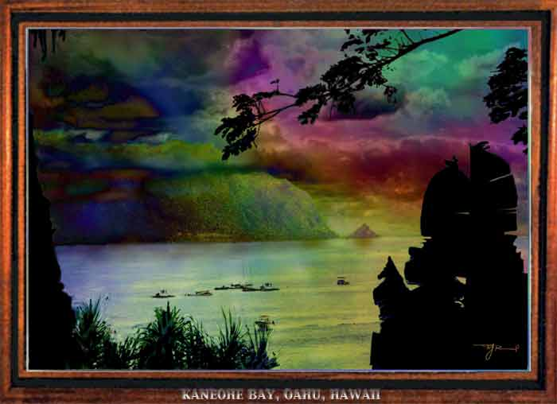

| Kaneohe Bay. Paintage, oil, watercolor. Kaneohe Bay is across the Koolau mountains from Honolulu, and one of the more beautiful bays in Hawaii. The little island across the bay is Chinaman's Hat, a glorious dawn over which I pictured in Gallery 1. |